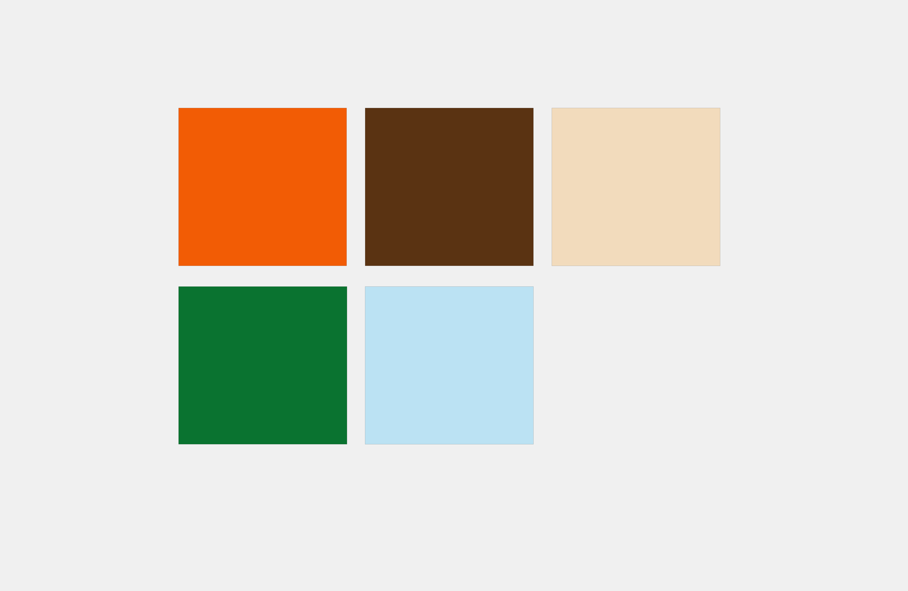
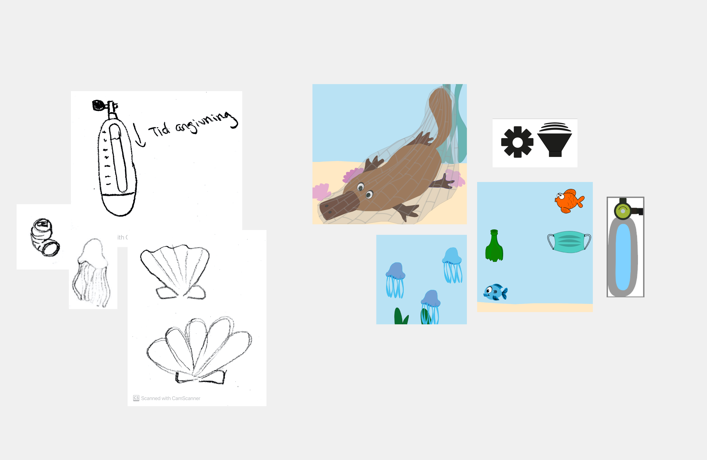

Animation
03
Animation
Design og kodning af eget spil vha. Javascript
I dette tema er jeg blevet introduceret for programmeringssproget Javascript, der bruges til at kode mere dynamiske og avancerede websites samt interaktive elementer som for eksempel burgermenu. Jeg har sammen med css brugt Javascript til at kode et spil med spilelementer. Jeg har i temaet lært at arbejde med aktivitets -og statemachine diagrammer som bruges til at planlægge flows i spillet. Mit spil blev udviklet efter mit eget spildesign hvor konventioner inden for UI-elementer, figurelementer og baggrundsdesign blev benyttet. Herudover har jeg fået færdigheder i programmet Illustrator hvor jeg har arbejdet med rentegning af grafik.
Temaet har for mig, personligt været et af de mest inspirerende temaer i dette semester. Jeg udarbejdede et spil i et sjovt og farverigt univers. Vi har i temaet arbejdet en del i Illustrator, photoshop og for første gang rigtig skiftet bekendtskab med javascript. Jeg udarbejdede et spil med målgruppen til unge/børn, da sværhedsgraden var let hvilket jeg fik bekræftet gennem survey sidst i temaet. Jeg udarbejdede et aktivitetsdiagram for at følge dette da spillet skulle kodes i Javascript. Dette gav et tydeligt indblik i hvordan ens functions skulle sættes op. Temaet fandt jeg udfordrende men spændende, og jeg ville have udnyttet tiden endnu bedre næste gang, hvis samme tema skulle komme, da jeg nu ved hvor meget tid jeg kan forvente at sætte af til koden samt design delen.
Vision
spillet introducerer brugeren for et relaterbart univers, hvor konflikter som forurening og dyrevelfærd toner frem i overfladen. Målet med spillet er at redde et dyr, fanget I et fiskenet, som for hvert point man mister bliver hevet længere op mod det store skib der ligger i overfladen. En dykker formidler spillets regler, og kommentere undervejs. Skrald og andre genstande der ikke hører til i havet, bliver kastet overbord fra skibet, samt fisk eller andre hav relaterede ting. Her gælder det om at klikke på alle de “dårlige ting”, for at få point. Der skal være et element der viser energi eller liv i form af en ilttank der fyldes. Spillet skal være underholdende, men lærerigt og samtidig nervepirrende, da et dyrs liv er på spil. Målgruppen er for børn og unge.
Prøv spilletGå til assetliste
Moodboard

Farvepalette
UI elementer
Spil

Proces

Skitser